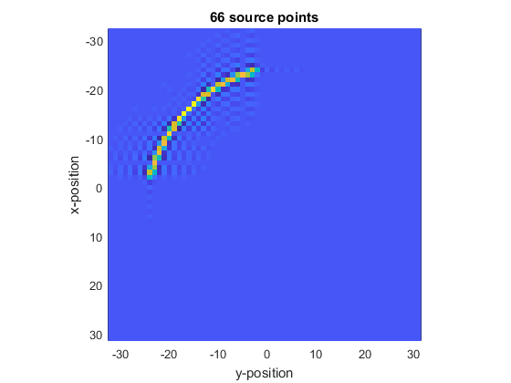

offGridArc
Generate a non-binary mask for a arc source on a 2D grid.
Syntax
mask = offGridArc(kgrid, arc_pos, radius, diameter, focus_pos)
mask = offGridArc(kgrid, arc_pos, radius, diameter, focus_pos, plot_arc)
Description
offGridArc computes a non-binary mask for implementing an arc source in 2D simulations. It evenly samples the arc, and for each sample point computes a band-limited interpolant corresponding to a point source at that location. These point source responses are summed and scaled to give the source mask.
Examples
Nx = 64;
Ny = Nx;
dx = 1;
dy = dx;
kgrid = kWaveGrid(Nx, dx, Ny, dy);
arc_pos = [-16, -16];
radius = 30;
diameter = 31;
focus_pos = -arc_pos;
plot_arc = true;
mask = offGridArc(kgrid, arc_pos, radius, diameter, focus_pos, plot_arc);
imagesc(kgrid.y_vec, kgrid.x_vec, mask)
ylabel('x-position')
xlabel('y-position')
axis image

Inputs
kgrid |
k-space grid structure returned by makeGrid containing Cartesian and k-space grid fields |
arc_pos |
centre of the rear surface of the arc given as a two element vector [bx, by] [m] |
radius |
radius of the arc [m] |
diameter |
aperture diameter (length of line connecting arc endpoints) [m] |
focus_pos |
any point on the beam axis of the arc given as a two element vector [fx, fy] [m] |
Optional Inputs
plot_arc |
boolean controlling whether the arc sampling points are plotted (default = false) |
Outputs
mask |
2D non-binary source mask for an arc |
See Also
makeArc,
makeMultiArc